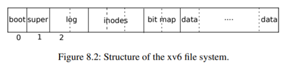
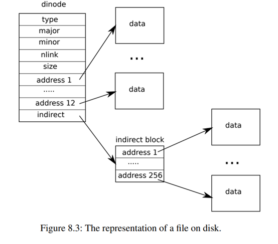

Chapter 8
第八章：文件系统¶
文件系统的目的是组织和存储数据。文件系统通常支持用户和应用程序之间的数据共享，以及支持持久性，以便数据在重启后仍然可用。
xv6文件系统提供了类Unix的文件、目录和路径名（见第1章），并将其数据存储在virtio磁盘上以实现持久化（见第4章）。该文件系统解决了几个挑战：
-
文件系统需要磁盘上的数据结构来表示命名目录和文件的树，记录保存每个文件内容的块的身份，并记录磁盘上哪些区域是空闲的。
-
文件系统必须支持崩溃恢复。也就是说，如果发生崩溃（如电源故障），文件系统必须在重新启动后仍能正常工作。风险在于，崩溃可能会中断更新序列，并在磁盘上留下不一致的数据结构（例如，一个块既在文件中使用，又被标记为空闲）。
-
不同的进程可能并发在文件系统上运行，所以文件系统代码必须协调维护每一个临界区。
-
访问磁盘的速度比访问内存的速度要慢几个数量级，所以文件系统必须在内存维护一个缓冲区，用于缓存常用块。
本章剩下的部分将解释xv6如何解决这些问题。
8.1 Overview¶

xv6文件系统的实现分为七层，如图8.1所示。disk层在virtio磁盘上读写块。Buffer cache缓存磁盘块，并同步访问它们，确保一个块只能同时被内核中的一个进程访问。日志层允许上层通过事务更新多个磁盘块，并确保在崩溃时，磁盘块是原子更新的（即全部更新或不更新）。inode层将一个文件都表示为一个**inode**，每个文件包含一个唯一的i-number和一些存放文件数据的块。目录层将实现了一种特殊的**inode**，被称为目录，其包含一个目录项序列，每个目录项由文件名称和i-number组成。路径名层提供了层次化的路径名，如/usr/rtm/xv6/fs.c，可以用递归查找解析他们。文件描述符层用文件系统接口抽象了许多Unix资源（如管道、设备、文件等），使程序员的生产力得到大大的提高。

文件系统必须安排好磁盘存储inode和内容块的位置。为此，xv6将磁盘分为几个部分，如图8.2所示。文件系统不使用块0（它存放boot sector）。第1块称为***superblock***，它包含了文件系统的元数据（以块为单位的文件系统大小、数据块的数量、inode的数量和日志中的块数）。从块2开始存放着日志。日志之后是inodes，每个块会包含多个inode。在这些块之后是***位图块(bitmap)***，记录哪些数据块在使用。其余的块是数据块，每个数据块要么在bitmap块中标记为空闲，要么持有文件或目录的内容。超级块由一个单独的程序**mkfs**写入，它建立了一个初始文件系统。
本章的其余部分将讨论每一层，从buffer缓存开始。从讨论中我们将看到如何选择合适的低层抽象，来方便更高层的设计。
8.2 Buffer cache layer¶
buffer缓存有两项工作。(1)同步访问磁盘块，以确保磁盘块在内存中只有一个buffer缓存，并且一次只有一个内核线程能使用该buffer缓存；(2)缓存使用较多的块，这样它们就不需要从慢速磁盘中重新读取。代码见**bio.c**。
buffer缓存的主要接口包括**bread**和**bwrite**，bread返回一个在内存中可以读取和修改的块副本**buf**，bwrite**将修改后的buffer写到磁盘上相应的块。内核线程在使用完一个buffer后，必须通过调用**brelse**释放它。buffer缓存为每个buffer的都设有sleep-lock，以确保每次只有一个线程使用buffer（从而使用相应的磁盘块）；**bread 返回的buffer会被锁定，而**brelse**释放锁。
我们再来看看buffer缓存。buffer缓存有固定数量的buffer来存放磁盘块，这意味着如果文件系统需要一个尚未被缓存的块，buffer缓存必须回收一个当前存放其他块的buffer。buffer缓存为新块寻找最近使用最少的buffer（lru机制）。因为最近使用最少的buffer是最不可能被再次使用的buffer。
8.3 Code: Buffer cache¶
buffer缓存是一个由buffer组成的双端链表。由函数**binit**用静态数组**buf**初始化这个链表， binit**在启动时由**main(kernel/main.c:27)调用。访问buffer缓存是通过链表，而不是**buf**数组。
buffer有两个与之相关的状态字段。字段**valid**表示是否包含该块的副本（是否从磁盘读取了数据）。字段**disk**表示缓冲区的内容已经被修改需要被重新写入磁盘。
bget (kernel/bio.c:59)扫描buffer链表，寻找给定设备号和扇区号来查找缓冲区(kernel/bio.c:65-73)。如果存在，**bget**就会获取该buffer的sleep-lock。然后**bget**返回被锁定的buffer。
如果给定的扇区没有缓存的buffer，bget**必须生成一个，可能会使用一个存放不同扇区的buffer，它再次扫描buffer链表，寻找没有被使用的buffer(**b->refcnt = 0)；任何这样的buffer都可以使用。任何这样的buffer都可以使用。bget修改buffer元数据，记录新的设备号和扇区号，并获得其sleep-lock。请注意，**b->valid = 0**可以确保bread从磁盘读取块数据，而不是错误地使用buffer之前的内容。
请注意，每个磁盘扇区最多只能有一个buffer，以确保写操作对读取者可见，也因为文件系统需要使用buffer上的锁来进行同步。Bget**通过从第一次循环检查块是否被缓存，第二次循环来生成一个相应的buffer（通过设置**dev、blockno**和**refcnt），在进行这两步操作时，需要一直持有**bache.lock** 。持有**bache.lock**会保证上面两个循环在整体上是原子的。
**bget**在**bcache.lock**保护的临界区之外获取buffer的sleep-lock是安全的，因为非零的**b->refcnt**可以防止缓冲区被重新用于不同的磁盘块。sleep-lock保护的是块的缓冲内容的读写，而bcache.lock保护被缓存块的信息。
如果所有buffer都在使用，那么太多的进程同时在执行文件相关的系统调用，bget就会**panic**。一个更好的处理方式可能是睡眠，直到有buffer空闲，尽管这时有可能出现死锁。
一旦**bread**读取了磁盘内容（如果需要的话）并将缓冲区返回给它的调用者，调用者就独占该buffer，可以读取或写入数据。如果调用者修改了buffer，它必须在释放buffer之前调用**bwrite**将修改后的数据写入磁盘。bwrite (kernel/bio.c:107)调用**virtio_disk_rw**与磁盘硬件交互。
当调用者处理完一个buffer后，必须调用**brelse**来释放它。(brelse**这个名字是**b-release**的缩写，虽然很神秘，但值得学习，它起源于Unix，在BSD、Linux和Solaris中也有使用。) **brelse (kernel/bio.c:117)释放sleep-lock，并将该buffer移动到链表的头部(kernel/bio.c:128-133)。移动buffer会使链表按照buffer最近使用的时间（最近释放）排序，链表中的第一个buffer是最近使用的，最后一个是最早使用的。**bget**中的两个循环利用了这一点，在最坏的情况下，获取已缓存buffer的扫描必须处理整个链表，由于数据局部性，先检查最近使用的缓冲区（从**bcache.head**开始，通过**next**指针）将减少扫描时间。扫描选取可使用buffer的方法是通过从后向前扫描（通过**prev**指针）选取最近使用最少的缓冲区。
8.4 Logging layer¶
文件系统设计中最有趣的问题之一是崩溃恢复。这个问题的出现是因为许多文件系统操作涉及到对磁盘的多次写入，如果只执行了部分写操作，然后发生崩溃可能会使磁盘上的文件系统处于不一致的状态。例如，假设在文件截断（将文件的长度设置为零并释放其内容块）时发生崩溃。根据磁盘写入的顺序，可能会留下一个引用空闲内容块的inode，也可能会留下一个已分配但没有被引用的内容块。
后面的这种情况相对来说好一点，但是如果一个inode指向被释放的块，很可能在重启后造成严重的问题。重启后，内核可能会将该块分配给另一个文件，现在我们有两个不同的文件无意中指向了同一个块。如果xv6支持多用户，这种情况可能是一个安全问题，因为旧文件的所有者能够读写新文件，即使该文件被另一个用户所拥有。
Xv6通过简单的日志系统来解决文件系统操作过程中崩溃带来的问题。xv6的系统调用不直接写磁盘上的文件系统数据结构。相反，它将写入的数据记录在磁盘上的日志中。一旦系统调用记录了全部的写入数据，它就会在磁盘上写一个特殊的提交记录，表明该日志包含了一个完整的操作。这时，系统调用就会将日志中的写入数据写到磁盘上相应的位置。在执行完成后，系统调用将磁盘上的日志清除。
如果系统崩溃并重启，文件系统会在启动过程中恢复自己。如果日志被标记为包含一个完整的操作，那么恢复代码就会将写入的内容复制到它们在磁盘文件系统中的相应位置。如果日志未被标记为包含完整的操作，则恢复代码将忽略并清除该日志。
为什么xv6的日志系统可以解决文件系统操作过程中的崩溃问题？如果崩溃发生在操作提交之前，那么磁盘上的日志将不会被标记为完成，恢复代码将忽略它，磁盘的状态就像操作根本没有开始一样。如果崩溃发生在操作提交之后，那么恢复代码会重新执行写操作，可能会重复执行之前的写操作。不管是哪种情况，日志都会使写与崩溃为原子的，即恢复后，所有操作的写入内容，要么都在磁盘上，要么都不在。
8.5 Log design¶
日志贮存在一个固定位置，由***superblock***指定。它由一个header块组成，后面是一连串的更新块副本（日志块）。header块包含一个扇区号数组，其中的每个扇区号都对应一个日志块[1]，header还包含日志块的数量。磁盘上header块中的数量要么为零，表示日志中没有事务，要么为非零，表示日志中包含一个完整的提交事务，并有指定数量的日志块。Xv6在事务提交时会修改 header块，将日志块复制到文件系统后，会将数量设为零。因此，一个事务中途的崩溃将导致日志header块中的计数为零；提交后的崩溃的计数为非零。
为了应对崩溃，每个系统调用都包含一个原子写序列。为了允许不同进程并发执行文件系统操作，日志系统可以将多个系统调用的写操作累积到一个事务中。因此，一次提交可能涉及多个完整系统调用的写入。为了避免一个系统调用被分裂到不同的事务中，只有在没有文件系统相关的系统调用正在进行时，日志系统才会提交。
将几个事务一起提交的方法被称为组提交（group commit）。组提交可以减少磁盘操作的次数，因为它将提交的固定成本分摊在了多个操作上。组提交可以让文件系统同时执行更多的并发写，也可以让磁盘在一次磁盘轮转中把它们全部写入。Xv6的virtio驱动不支持这种批处理，但xv6的文件系统实现了这种方式。
Xv6在磁盘上划出固定的空间来存放日志。在一个事务中，系统调用所写的块总数必须适应这个空间的大小。这将导致两个后果：
1、系统调用写入的日志大小必须小于日志空间的大小。这对大多数系统调用来说都不是问题，但有两个系统调用可能会写很多块，write**和**unlink。大文件的write可能会写很多数据块和bitmap块，以及一个inode块；取消链接一个大文件可能会写很多bitmap块和一个inode。Xv6的**write**系统调用将大的写操作分解成多个小的写操作，以适应在日志空间的大小，而**unlink**不会引起问题，因为xv6文件系统只使用一个位图块。
2、日志空间有限的另一个后果是，日志系统只会在确定了系统调用的写操作可以适应剩余日志空间之后，才会开始执行该系统调用。
8.6 Code: logging¶
系统调用中一般用法如下：
begin_op(kernel/log.c:126)会一直等到日志系统没有commiting，并且有足够的日志空间来容纳这次调用的写。**log.outstanding**统计当前系统调用的数量，可以通过**log.outstanding**乘以**MAXOPBLOCKS**来计算已使用的日志空间。自增**log.outstanding**既能预留空间，又能防止该系统调用期间进行提交。该代码假设每次系统调用最多写入**MAXOPBLOCKS**个块。
log_write (kernel/log.c:214) 是**bwrite**的代理。它将扇区号记录在内存中，在磁盘上的日志中使用一个槽，并自增**buffer.refcnt**防止该**buffer**被重用。在提交之前，块必须留在缓存中，即该缓存的副本是修改的唯一记录；在提交之后才能将其写入磁盘上的位置；该次修改必须对其他读可见。 注意，当一个块在一个事务中被多次写入时，他们在日志中的槽是相同的。这种优化通常被称为***absorption***(吸收)。例如，在一个事务中，包含多个文件的多个inode的磁盘块被写多次，这是常见的情况。通过将几次磁盘写***吸收***为一次，文件系统可以节省日志空间，并且可以获得更好的性能，因为只有一份磁盘块的副本必须写入磁盘。
end_op (kernel/log.c:146)首先递减**log.outstanding**。如果计数为零，则通过调用**commit()**来提交当前事务。
**Commit**分为四个阶段：
1、write_log()(kernel/log.c:178)将事务中修改的每个块从buffer缓存中复制到磁盘上的日志槽中。
2、 write_head()(kernel/log.c:102)将header块写到磁盘上，就表明已提交，为提交点，写完日志后的崩溃，会导致在重启后重新执行日志。
3、install_trans(kernel/log.c:69)从日志中读取每个块，并将其写到文件系统中对应的位置。
4、最后修改日志块计数为0，并写入日志空间的header部分。这必须在下一个事务开始之前修改，这样崩溃就不会导致重启后的恢复使用这次的header和下次的日志块。
recover_from_log (kernel/log.c:116) 是在 initlog (kernel/log.c:55) 中调用的，而 initlog 是在第一个用户进程运行 (kernel/proc.c:539) 之前, 由 fsinit(kernel/fs.c:42) 调用的。它读取日志头，如果日志头显示日志中包含一个已提交的事务，则会像**end_op**那样执行日志。
一个使用了日志的例子是filewrite (kernel/file.c:135)。这个事务看起来像这样：
这段代码被包裹在一个循环中，它将大的写分解成每次只有几个扇区的单独事务，以避免溢出日志空间。调用 writei 写入许多块作为这个事务的一部分：文件的 inode，一个或多个bitmap块，以及一些数据块。
8.7 Code: Block allocator¶
文件和目录存储在磁盘块中，必须从空闲池中分配，xv6的块分配器在磁盘上维护一个bitmap，每个块对应一个位。0表示对应的块是空闲的，1表示正在使用中。程序mkfs设置引导扇区、超级块、日志块、inode块和位图块对应的位。
块分配器提供了两个函数：balloc**申请一个新的磁盘块，**bfree**释放一个块。**balloc (kernel/fs.c:71)会有一个循环遍历每一个块，从块 0 开始，直到 sb.size，即文件系统中的块数。它寻找一个位为0的空闲块。如果 balloc 找到了这样一个块，它就会更新bitmap并返回该块。为了提高效率，这个循环被分成两部分。外循环读取bitmap的一个块，内循环检查块中的所有BPB位。如果两个进程同时试图分配一个块，可能会发生竞争，但buffer缓存只允许块同时被一个进程访问，这就避免了这种情况的发生。
Bfree (kernel/fs.c:90) 找到相应的bitmap块并清除相应的位。**bread**和**brelse**暗含的独占性避免了显式锁定。
与本章其余部分描述的大部分代码一样，**balloc**和**bfree**必须在事务中被调用。
8.8 Inode layer¶
术语inode有两种相关的含义。1、指的是磁盘上的数据结构，其中包含了文件的大小和数据块号的列表；2、指的是内存中的inode，它包含了磁盘上inode的副本以及内核中需要的其他信息。
磁盘上的inode被放置磁盘的一个连续区域。每一个inode的大小都是一样的，所以，给定一个数字n，很容易找到磁盘上的第n个inode。事实上，这个数字n，被称为inode号或i-number，在实现中就是通过这个识别inode的。
结构体**dinode**(kernel/fs.h:32)定义了磁盘上的inode。**type**字段区分了文件、目录和特殊文件（设备）。type为0表示该inode是空闲的。**nlink**字段统计引用这个inode的目录项的数量，当引用数为0时就释放磁盘上的inode及其数据块。**size**字段记录了文件中内容的字节数。**addrs**数组记录了持有文件内容的磁盘块的块号。
内核将在使用的inode保存在内存中；结构体**inode** (kernel/file.h:17)是磁盘**dinode**的拷贝。内核只在有指针指向inode才会储存。ref**字段为指向inode的指针的数量，如果引用数量减少到零，内核就会从内存中丢弃这个inode。**iget**和**iput**函数引用和释放inode，并修改引用计数。指向inode的指针可以来自文件描述符，当前工作目录，以及短暂的内核代码，如**exec。
在xv6的inode代码中，有四种锁或类似锁的机制。**icache.lock**保证了一个inode在缓存只有一个副本，以及缓存inode的**ref**字段计数正确。每个内存中的inode都有一个包含sleep-lock的锁字段，它保证了可以独占访问inode的其他字段（如文件长度）以及inode的文件或目录内容块的。一个inode的**ref**如果大于0，则会使系统将该inode保留在缓存中，而不会重用该inode。最后，每个inode都包含一个**nlink**字段(在磁盘上，缓存时会复制到内存中)，该字段统计链接该inode的目录项的数量；如果一个inode的链接数大于零，xv6不会释放它。
在xv6的inode代码中，有四种锁或类似锁的机制。**icache.lock**保证了一个inode在缓存只有一个副本，以及缓存inode的**ref**字段计数正确。每个内存中的inode都有一个包含sleep-lock的锁字段，它保证了可以独占访问inode的其他字段（如文件长度）以及inode的文件或目录内容块的。一个inode的**ref**如果大于0，则会使系统将该inode保留在缓存中，而不会重用该缓存buffer。最后，每个inode都包含一个**nlink**字段(在磁盘上，如果是缓存，则复制在内存中)，该字段统计引用文件的目录项的数量；只有当inode的链接数为零时，xv6才会释放它。
**iget()**返回的**inode**指针在调用iput()之前都是有效的；inode不会被删除，指针所引用的内存也不会被另一个inode重新使用。**iget()**提供了对inode的非独占性访问，因此可以有许多指针指向同一个inode。文件系统代码中的许多部分都依赖于**iget()**的这种行为，既是为了保持对inode的长期引用(如打开的文件和当前目录)，也是为了防止竞争，同时避免在操作多个inode的代码中出现死锁(如路径名查找)。
inode缓存只缓存被指针指向的inode。它的主要工作其实是同步多个进程的访问，缓存是次要的。如果一个inode被频繁使用，如果不被inode缓存保存，buffer缓存可能会把它保存在内存中。inode缓存是***write-through***的，这意味着缓存的inode被修改，就必须立即用**iupdate**把它写入磁盘。
8.9 Code: Inodes¶
要创建一个新的inode(例如，当创建一个文件时)，xv6会调用**ialloc**(kernel/fs.c:196)。ialloc 类似于 balloc：它遍历磁盘上的 inode ，寻找一个被标记为空闲的inode。当它找到后，它会修改该inode的**type**字段来使用它，最后调用 iget (kernel/fs.c:210) 来从 inode 缓存中返回一个条目。由于一次只能有一个进程持有对**bp:ialloc**的引用，所以可以确保其他进程不会同时看到inode是可用的并使用它。
Iget (kernel/fs.c:243) 在 inode 缓存中寻找一个带有所需设备号和 inode 号码的active条目 (ip->ref > 0)。如果它找到了，它就返回一个新的对该inode的引用(kernel/fs.c:252-256)。当 iget 扫描时，它会记录第一个空槽的位置 (kernel/fs.c:257- 258)，当它需要分配一个缓存条目时，它会使用这个空槽。
在读写inode的元数据或内容之前，代码必须使用**ilock**锁定它。Ilock(kernel/fs.c:289)使用sleep-lock来锁定。一旦**ilock**锁定了inode，它就会根据自己的需要从磁盘（更有可能是buffer缓存）读取inode。函数**iunlock** (kernel/fs.c:317)释放睡眠锁，这会唤醒正在等待该睡眠锁的进程。
Iput (kernel/fs.c:333) 通过递减引用次数 (kernel/fs.c:356) 释放指向inode的指针。如果递减后的引用数为0，inode 缓存中的 就会释放掉该inode 在inode缓存中的槽位，该槽位就可以被其他inode使用。
如果**iput**发现没有指针指向该inode，并且没有任何目录项链接该inode（不在任何目录中出现），那么该inode和它的数据块必须被释放。**Iput**调用**itrunc**将文件截断为零字节，释放数据块；将inode类型设置为0（未分配）；并将inode写入磁盘（kernel/fs.c:338）。
iput**在释放inode的锁定协议是值得我们仔细研究。一个危险是，一个并发线程可能会在**ilock**中等待使用这个inode(例如，读取一个文件或列出一个目录)，但它没有意识到该inode可能被释放掉了。这种情况是不会发生，因为该inode的没有被目录项链接且**ip->ref**为1，那么系统调用是没有这个指针的（如果有，**ip->ref**应该为2）。这一个引用是调用 iput 的线程所拥有的。的确，**iput**会在其**icache.lock**锁定的临界区之外检查引用数是否为1，但此时已知链接数为0，所以没有线程会尝试获取新的引用。另一个主要的危险是，并发调用**ialloc**可能会使**iput**返回一个正在被释放的inode。这种情况发生在**iupdate**写磁盘时**ip->type=0。这种竞争是正常的，分配inode的线程会等待获取inode的睡眠锁，然后再读取或写入inode，但此时**iput**就结束了。
**iput()**会写磁盘。这意味着任何使用文件系统的系统调用都会写磁盘，因为系统调用可能是最后一个对文件有引用的调用。甚至像read()这样看似只读的调用，最终也可能会调用iput()。这又意味着，即使是只读的系统调用，如果使用了文件系统，也必须用事务来包装。
崩溃发生在**iput()**中是相当棘手的。当文件的链接数降到零时，**iput()**不会立即截断一个文件，因为一些进程可能仍然在内存中持有对inode的引用：一个进程可能仍然在对文件进行读写，因为它成功地打开了inode。但是，如果崩溃发生在该文件的最后一个文件描述符释放时，那么该文件将被标记为已在磁盘上分配，但没有目录项指向它。
文件系统处理这种情况的方法有两种。简单的解决方法是，是在重启后的恢复时，文件系统会扫描整个文件系统，寻找那些被标记为已分配的文件，但没有指向它们的目录项。如果有这样的文件存在，那么就可以释放这些文件。
第二种解决方案不需要扫描文件系统。在这个解决方案中，文件系统在磁盘上（例如，在***superblock***中）记录链接数为0但引用数不为0的文件的inode的inumber。如果文件系统在其引用计数达到0时删除该文件 。当文件的引用数为0时，文件系统会删除该文件，同时它更新磁盘上的列表，从列表中删除该inode。恢复时，文件系统会释放列表中的任何文件。
Xv6没有实现这两种解决方案，这意味着inode可能会在磁盘上被标记分配，即使它们不再使用。这意味着随着时间的推移，xv6可能会面临磁盘空间耗尽的风险。
8.10 Code: Inode content¶

磁盘上的**inode**，即**dinode**结构体，包含一个size和一个块号数组（见图8.3）。inode**数据可以在**dinode**的**addrs**数组中找到。开始的**NDIRECT**个数据块列在数组中的前**NDIRECT**个条目中，这些块被称为***直接块*。接下来的**NINDIRECT**个数据块并没有列在**inode**中，而是列在叫做***间接块***的数据块中。addrs**数组中的最后一个条目给出了放置间接块的地址。因此，一个文件的前**12 kB ( NDIRECT x BSIZE)字节可以从**inode**中列出的块中加载，而接下来的**256** kB ( NINDIRECT x BSIZE)字节只能在查阅间接块后才能取出。对于磁盘这是一种不错的表示方式，但对客户机就有点复杂了。函数**bmap**包装了这种表示方式使得高层次的函数，如**readi**和**writei**可以更好的使用。**Bmap**返回inode **ip**的第 **bn**个数据块的磁盘块号。如果**ip**没有第**bn**个的数据块，**bmap**就会分配一个。
函数**bmap**(kernel/fs.c:378)从简单的情况开始：最前面的**NDIRECT**个块储存在inode(kernel/fs.c:383-387)中，接下来的**NINDIRECT**个块放置在**ip->addrs[NDIRECT]指向的的***间接块***中。**Bmap**读取间接块(kernel/fs.c:394)，然后从块内的正确的位置读取一个块号(kernel/fs.c:395)。如果块号超过了**NDIRECT+NINDIRECT，bmap**就会**panic；**writei**会检查并防止这种情况(kernel/fs.c:490)。
**Bmap**根据需要分配块。**ip->addrs[bn]**或间接条目为0 时表示没有块。当**bmap**遇到0时，它会用新的块号来代替0(kernel/fs.c:384-385) (kernel/fs.c:392-393)。
itrunc 释放文件的块，将inode的大小重置为零。Itrunc (kernel/fs.c:410) 首先释放***直接块***(kernel/fs.c:416-421)，然后释放***间接块***中指向的块(kernel/fs.c:426- 429)，最后释放***间接块***本身(kernel/fs.c:431-432)。
Bmap 使得 readi 和 writei 可以很容易地获取一个 inode 的数据。Readi (kernel/fs.c:456)首先要确定偏移量和计数没有超过文件末端。从文件超出末尾开始的读会返回一个错误(kernel/fs.c:461-462)，而从文件末尾开始或读取过程中超出末尾的读会不会返回错误，只是返回的字节数会少于请求的字节数(kernel/fs.c:463-464)。
主循环会把文件中的每一个块的数据复制到**dst**中(kernel/fs.c:466-474)。writei (kernel/fs.c:483)与**readi**相同，但有三个不同：（1）、从文件末尾开始或越过文件末尾的写入会使文件增长，但不会超过文件的最大长度(kernel/fs.c:490-491)；（2）、循环将数据复制到缓冲区而不是**out**(kernel/fs.c:36)；（3）、如果写使文件增长了，**writi**必须更新它的大小(kernel/fs.c:504-511)。
readi**和**writei**开始都会检查**ip->type == T_DEV。这种情况处理的是数据不在文件系统中的特殊设备；我们将在文件描述符层中再讨论这种情况。
函数 stati (kernel/fs.c:442) 将 inode 元数据复制到 stat 结构体中，通过 stat 系统调用暴露给用户程序。
8.11 Code: directory layer¶
目录的实现机制和文件很类似。它的**inode**类型是**T_DIR**，它的数据是一个目录项的序列。每个条目是一个结构体**dirent**(kernel/fs.h:56)，它包含一个名称和一个inode号。名称最多包含**DIRSIZ**(14)个字符，较短的名称以**NULL**(0)结束。inode号为0的目录项是空闲的。
函数**dirlookup** (kernel/fs.c:527)在一个目录中搜索一个带有给定名称的条目。如果找到了，它返回一个指向相应未上锁的inode的指针，并将***poff**设置为目录中条目的字节偏移量，以便调用者想要编辑它。如果dirlookup找到一个对应名称的条目，则更新*poff，并返回一个通过iget获得的未被锁定的inode。Dirlookup是iget返回未锁定的inode的原因。调用者已经锁定了dp，所以如果查找的是 “.” ，当前目录的别名，在返回之前试图锁定inode，就会试图重新锁定dp而死锁。(还有更复杂的死锁情况，涉及到多个进程和”..”，父目录的别名；”**.”**不是唯一的问题。) 调用者可以先解锁dp，然后再锁定ip，保证一次只持有一个锁。
函数**dirlink** (kernel/fs.c:554)会在当前目录dp中创建一个新的目录项，通过给定的名称和inode号。如果名称已经存在，dirlink 将返回一个错误(kernel/fs.c:560- 564)。主循环读取目录项，寻找一个未使用的条目。当它找到一个时，它会提前跳出循环 (kernel/fs.c:538-539)，并将 off 设置为该可用条目的偏移量。否则，循环结束时，将**off**设置为**dp->size**。不管是哪种方式，**dirlink**都会在偏移量**off**的位置添加一个新的条目到目录中(kernel/fs.c:574-577)。
8.12 Code: Path names¶
查找路径名会对每一个节点调用一次**dirlookup**。Namei (kernel/fs.c:661) 解析路径并返回相应的inode。函数**nameiparent**是**namei**的一个变种：它返回相应inode的父目录inode，并将最后一个元素复制到**name**中。这两个函数都通过调用**namex**来实现。
Namex (kernel/fs.c:626)首先确定路径解析从哪里开始。如果路径以斜线开头，则从根目录开始解析；否则，从当前目录开始解析(kernel/fs.c:630-633)。然后它使用 skipelem 来遍历路径中的每个元素(kernel/fs.c:635)。循环的每次迭代都必须在当前inode ip**中查找**name。迭代的开始是锁定**ip**并检查它是否是一个目录。如果不是，查找就会失败(kernel/fs.c:636-640)。(锁定**ip**是必要的，不是因为**ip->type**可能会改变，而是因为在**ilock**运行之前，不能保证ip->type已经从磁盘载入)。如果调用的是**nameiparent**，而且这是最后一个路径元素，按照之前**nameiparent**的定义，循环应该提前停止，最后一个路径元素已经被复制到name中，所以**namex**只需要返回解锁的ip(kernel/fs.c:641-645)。最后，循环使用**dirlookup**查找路径元素，并通过设置**ip** = next**为下一次迭代做准备(kernel/fs.c:646-651)。当循环遍历完路径元素时，它返回**ip。
**namex**可能需要很长的时间来完成：它可能会涉及几个磁盘操作，通过遍历路径名得到的目录的inode和目录块（如果它们不在buffer缓存中）。Xv6经过精心设计，如果一个内核线程对**namex**的调用阻塞在磁盘I/O上，另一个内核线程查找不同的路径名可以同时进行。**Namex**分别锁定路径中的每个目录，这样不同目录的查找就可以并行进行。
这种并发性带来了一些挑战。例如，当一个内核线程在查找一个路径名时，另一个内核线程可能正在取消链接一个目录，这会改变目录数。一个潜在的风险是，可能一个查找线程正在搜索的目录可能已经被另一个内核线程删除了，而它的块已经被另一个目录或文件重用了。
Xv6避免了这种竞争。例如，在**namex**中执行**dirlookup**时，查找线程会持有目录的锁，**dirlookup**返回一个使用**iget**获得的inode。**iget**会增加inode的引用次数。只有从**dirlookup**收到inode后，**namex**才会释放目录上的锁。现在另一个线程可能会从目录中取消链接inode，但xv6还不会删除inode，因为inode的引用数仍然大于零。
另一个风险是死锁。例如，当查找**". "**时，next指向的inode与**ip**相同。在释放对**ip**的锁之前锁定next会导致死锁。为了避免这种死锁，**namex**在获得对next的锁之前就会解锁目录。这里我们再次看到为什么**iget**和**ilock**之间的分离是很重要的。
8.13 File descriptor layer¶
Unix接口很酷的一点是：Unix中的大部分资源都是以文件的形式来表示的。包括控制台、管道等设备，当然还有真实的文件。文件描述符层就是实现这种统一性的一层。
Xv6给每个进程提供了自己的打开文件表，或者说文件描述符表，就像我们在第一章中看到的那样。每个打开的文件由一个结构体**file**(kernel/file.h:1)表示，它包装inode或管道，也包含一个I/O偏移量。每次调用**open**都会创建一个新的打开文件（一个新的结构体file），如果多个进程独立打开同一个文件，那么不同的**file**实例会有不同的I/O偏移量。另一方面，一个打开的文件（同一个结构文件）可以在一个进程的文件表中出现多次，也可以在多个进程的文件表中出现。如果一个进程使用**open**打开文件，然后使用**dup**创建别名，或者使用**fork**与子进程共享文件，就会出现这种情况。引用计数可以跟踪特定打开文件的引用数量。一个文件的打开方式可以为读，写，或者读写。通过**readable**和**writable**来指明。
系统中所有打开的文件都保存在一个全局文件表中，即**ftable**。文件表的功能有: 分配文件(filealloc)、创建重复引用(fileup)、释放引用(fileclose)、读写数据(fileeread**和**filewrite)。
前三个函数应该比较熟悉了,就不过多的讨论。Filealloc (kernel/file.c:30) 扫描文件表，寻找一个未引用的文件 (f->ref == 0)，并返回一个新的引用；fileup (kernel/file.c:48) 增加引用计数；fileclose (kernel/file.c:60) 减少引用计数。当一个文件的引用数达到0时，**fileclose**会根据类型释放底层的管道或inode。
函数**filestat**、fileread**和**filewrite**实现了对文件的统计、读和写操作。Filestat(kernel/file.c:88)只允许对inodes进行操作，并调用**stati。**Fileread**和**filewrite**首先检查打开模式是否允许该操作，然后再调用管道或inode的相关实现。如果文件代表一个inode，**fileread**和**filewrite**使用I/O偏移量作为本次操作的偏移量，然后前移偏移量（kernel/file.c:122- 123）（kernel/file.c:153-154）。Pipes没有偏移量的概念。回想一下inode的函数需要调用者处理锁的相关操作（kernel/file.c:94-96）（kernel/file.c:121-124）（kernel/file.c:163-166）。inode加锁附带了一个不错的作用，那就是读写偏移量是原子式更新的，这样多个进程写一个文件时，自己写的数据就不会被其他进程所覆盖，尽管他们的写入可能最终会交错进行。
8.14 Code: System calls¶
有了更低层提供的函数，大多数系统调用的实现都是比较简单的（见(kernel/sysfile.c)）。有几个调用值得仔细研究一下。
函数 sys_link 和 sys_unlink 可以编辑目录，创建或删除对 inodes 的引用。它们是使用事务的另一个很好的例子。Sys_link (kernel/sysfile.c:120) 首先获取它的参数，两个字符串 old 和 new (kernel/sysfile.c:125) 。假设 old 存在并且不是一个目录 (kernel/sysfile.c:129-132)，sys_link 会递增它的 ip->nlink 计数。然后 sys_link 调用 nameiparent 找到 new (kernel/sysfile.c:145) 的父目录和最终路径元素，并创建一个指向 old**的 inode 的新目录项 (kernel/sysfile.c:148)。新的父目录必须存在，并且和现有的inode在同一个设备上，inode号只在同一个磁盘上有意义。如果出现这样的错误，**sys_link**必须返回并减少**ip->nlink。
事务简化了这个函数的实现，因为它需要更新多个磁盘块，但我们不必担心做这些事情的顺序。它们要么全部成功，要么都不成功。例如，如果没有事务，在创建链接之前更新**ip->nlink**，会使文件系统暂时处于不安全的状态，中间的崩溃可能会造成破坏。有了事务，我们就不用担心这个问题了。
Sys_link**为一个现有的inode创建一个新的名字。而函数**create (kernel/sysfile.c:242)为一个新的inode创建一个新的名字。它是三个文件创建相关的系统调用的综合：使用O_CREATE标志的open创建一个新的普通文件，mkdir**创建一个新的目录，以及mkdev创建一个新的设备文件。和**sys_link**一样，**create**也是通过调用**nameiparent**来获取父目录的inode。然后调用 **dirlookup 来检查名称是否已经存在 (kernel/sysfile.c:252)。如果名称存在，create的行为取决于它被用于哪个系统调用：open，mkdir，mkdev**的语义不同。如果**create**是由**open**使用的 (**type == T_FILE)，如果能根据该名字存在且为普通文件，那么打开就会成功，所以**create**也会成功 (kernel/sysfile.c:256)。否则，就会报错（kernel/sysfile.c:257-258）。如果这个名字不存在，create**就会用**ialloc**分配一个新的inode(kernel/sysfile.c:261)。如果新的inode是一个目录，**create**会在该目录添加条目“.”和“..”。最后，现在数据已经被正确地初始化了，**create**可以把它链接到父目录中(kernel/sysfile.c:274)。和**sys_link**一样，create同时拥有两个inode锁：**ip**和**dp。没有死锁的可能性，因为inode **ip**是新分配的：系统中没有其他进程会持有**ip**的锁并尝试锁住dp。。
使用**create**，很容易实现**sys_open**、sys_mkdir**和**sys_mknod。Sys_open (kernel/sysfile.c:287)是其中最复杂的，因为创建一个新文件只是它做的一小部分。如果**open**的打开模式包含为**O_CREATE**，它就会调用**create** (kernel/sysfile.c:301)。否则，它会调用 namei (kernel/sysfile.c:307)。**Create**会返回一个锁定的inode，但**namei**不会，所以**sys_open**必须锁定inode。这比较有一个方便的地方是目录只会以读打开，而不是写。假设inode是通过某种方式获得的，sys_open会分配一个文件和一个文件描述符(kernel/sysfile.c:325)，然后设置file相关的字段(kernel/sysfile.c:337- 94 342)。注意，没有其他进程可以访问这个部分初始化的文件，因为它只在当前进程的表中。
第7章在我们还没有文件系统之前就研究了管道的实现。函数**sys_pipe**通过提供创建管道对的方法将管道实现与文件系统连接起来。它的参数是一个指针，该指针指向一个长度为2的int类型数组，它将在这里记录两个新的文件描述符。然后它分配管道并装入文件描述符。
8.15 Real world¶
实际操作系统中的buffer缓存要比xv6的复杂得多，但它有同样的两个目的：缓存和同步访问磁盘。xv6的buffer缓存和V6是一样的，使用简单的最近最少使用（LRU）抛弃策略；可以实现许多更复杂的策略，每种策略都对某些情况有好处，而对其它情况没有好处。更高效的LRU缓存不使用链表，而使用哈希表进行查找，使用堆进行LRU抛弃。现代的buffer缓存通常与虚拟内存系统集成在一起，以支持内存映射的文件。
Xv6的日志系统效率低下。提交不能与文件系统系统调用同时发生。系统会记录整个块，即使一个块中只有几个字节被改变。它执行同步的日志写入，一次写一个块，每一个块都可能需要整个磁盘旋转时间。真正的日志系统可以解决所有这些问题。
日志不是提供崩溃恢复的唯一方法。早期的文件系统在重启期间使用scavenger（例如UNIX fsck程序）来检查每个文件和目录以及块和inode空闲列表，寻找并解决不一致的地方。对于大型文件系统来说，清扫可能需要几个小时的时间，而且在某些情况下，这种方式要想获得的数据一致性，其系统调用必须是一致性的。从日志中恢复要快得多，而且在崩溃时，系统调用是原子的。
Xv6使用了与早期UNIX相同的inodes和目录的基本磁盘布局；这个方案多年来仍在使用。BSD的UFS/FFS和Linux的ext2/ext3使用基本相同的数据结构。文件系统布局中最低效的部分是目录，在每次查找过程中需要对所有磁盘块进行线性扫描。当目录只有几个磁盘块时，这是合理的，但对于有许多文件的目录来说是昂贵的。微软Windows的NTFS，Mac OS X的HFS，以及Solaris的ZFS，将目录实现为磁盘上块的平衡树。这很复杂，但可以保证目录查找的时间复杂度是对数级的。
Xv6对磁盘故障的处理很朴素：如果磁盘操作失败，xv6就会**panic**。这是否合理取决于硬件：如果一个操作系统位于特殊的硬件之上，这种硬件会使用冗余来掩盖故障，也许操作系统看到故障的频率很低，以至于直接**panic**是可以的。另一方面，使用普通磁盘的操作系统应该使用更加优雅的方式来处理异常，这样一个文件中一个块的丢失就不会影响文件系统其他部分的使用。
Xv6要求文件系统固定在单一磁盘设备上，而且大小不能改变。随着大型数据库和多媒体文件对存储要求越来越高，操作系统正在开发消除每个文件系统一个磁盘瓶颈的方法。基本的方法是将许多磁盘组合成一个逻辑磁盘。硬件解决方案（如RAID）仍然是最流行的，但目前的趋势是尽可能地在软件中实现这种逻辑。这些软件实现通常允许丰富的功能，如在运行时通过快速添加或删除磁盘来增长或缩小逻辑设备。当然，一个能够快速增长或收缩的存储层需要一个能够做到同样的文件系统：xv6使用的固定大小的inode块阵列在这样的环境中不能很好地工作。将磁盘管理与文件系统分离可能是最简洁的设计，但由于两者之间复杂的接口，使得有些系统，如Sun公司的ZFS，将两者直接结合起来。
Xv6的文件系统缺乏现代文件系统的许多其他功能，例如，它缺乏对快照和增量备份的支持。
现代Unix系统允许用与磁盘存储相同的系统调用来访问许多种类的资源：命名管道、网络连接、远程访问的网络文件系统以及监视和控制接口，如/proc。与xv6在fileread和filewrite中的if语句，这些系统通常给每个打开的文件一个函数指针表，每个代表一个操作，调用函数指针来调用该inode的实现调用。网络文件系统和用户级文件系统提供了将这些调用变成网络RPC的函数，并在返回前等待响应。
8.16 Exercises¶
-
为什么**balloc**需要**panic**？xv6能恢复吗？
-
为什么**ialloc**需要**panic**？xv6能恢复吗？
-
为什么**filealloc**用完文件后不**panic**？为什么这种情况比较常见，而值得处理？
-
假设在执行**sys_lin**k时，另一个进程在**iunlock(ip)**和**dirlink**之间解除链接该**ip**对应的文件。链接会被正确创建吗？为什么？
-
create**调用了四次函数（一个**ialloc，三次**dirlink**），它需要这些函数成功返回。如果任何一个不成功，create**调用就会**panic。为什么这可以接受？为什么这四个调用不能有一个失败呢？
-
sys_chdir**在**iput(cp->cwd)**之前调用**iunlock(ip)，这可能会尝试锁定**cp->cwd**，但将**iunlock(ip)**推迟到**iput**之后不会造成死锁。为什么不会呢？
-
实现**lseek**系统调用。lseek**还需要你修改**filewrite，如果**lseek**设置超过**f->ip->size**，则在文件中用零来填补空缺。
-
给**open**增加O_TRUNC和O_APPEND，使>和>>操作符在shell中可以使用。
-
修改文件系统使其支持符号链接。
-
修改文件系统使其支持命名管道。
-
修改文件系统和VM使其支持memory-map文件（内存映射文件）。